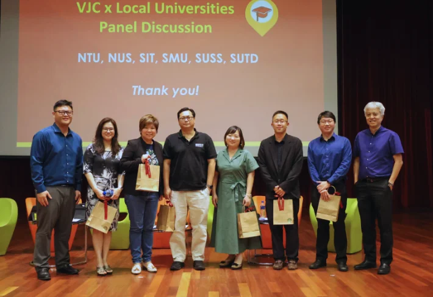

University applications
Plan your path to university, whether you're applying locally, overseas or both.

New here? Start with Get Started Here. It covers the timeline every Victorian follows, wherever you apply.
Start here
Get Started Here
The shared timeline, key deadlines and myths, busted. Read this first.
Open
Local Universities
How to apply to NUS, NTU, SMU, SUTD, SIT and SUSS, with past ABA questions.
Open
Overseas Universities
Compare the UK, US and EU, ANZ & Asia, then open the guide for each.
OpenNew University Courses
Degrees just launched at the local universities, with links to each course.
Open